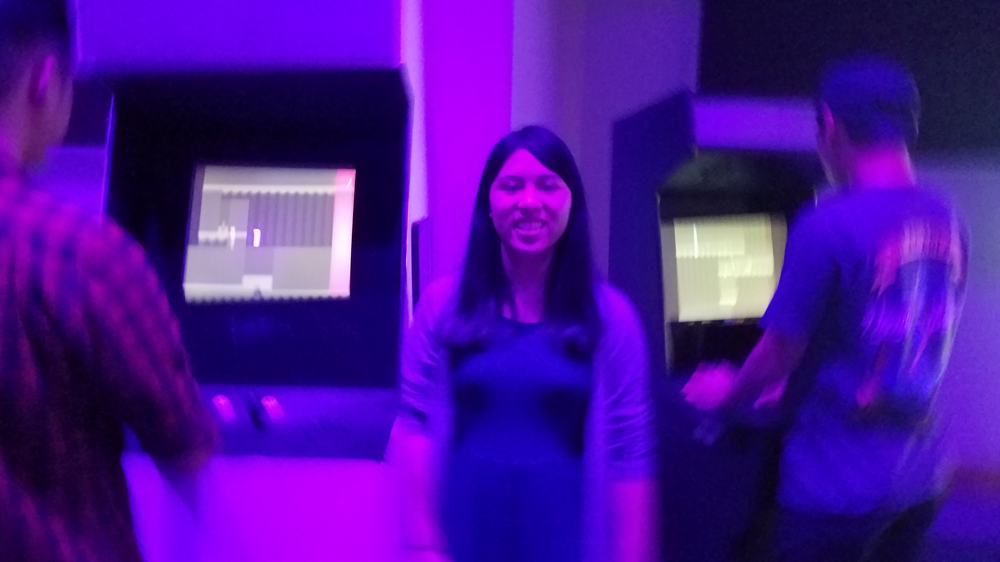
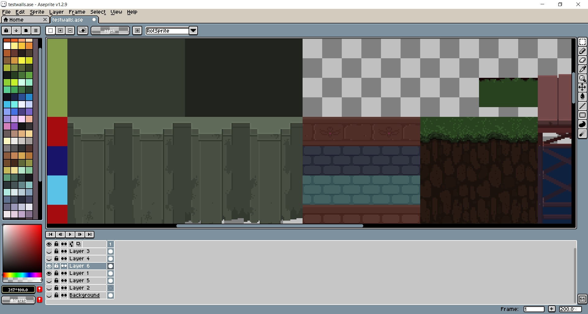
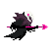
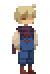
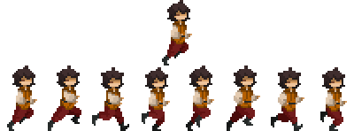
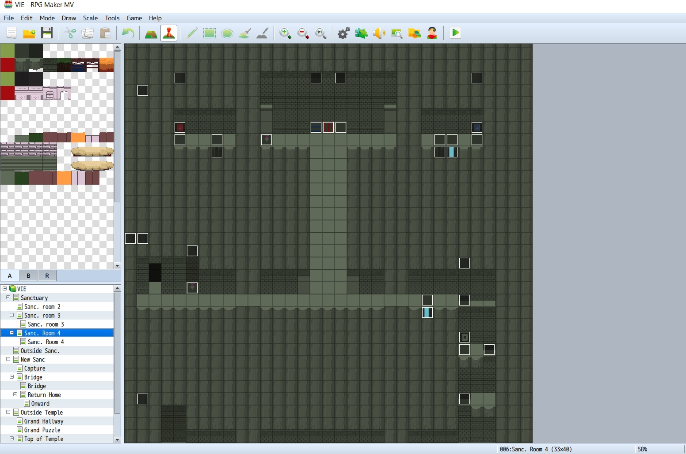
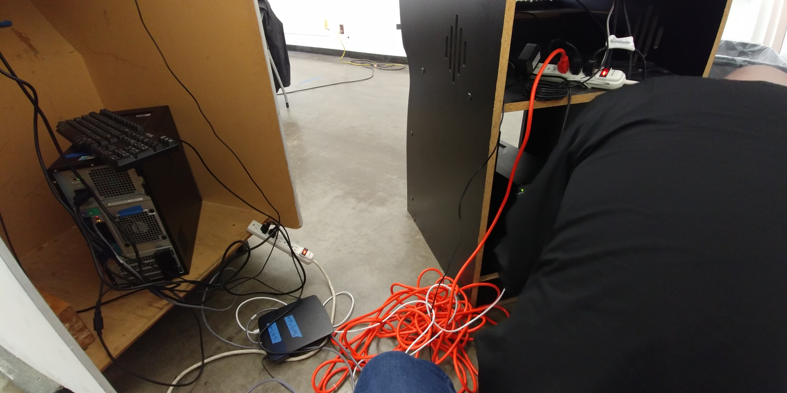
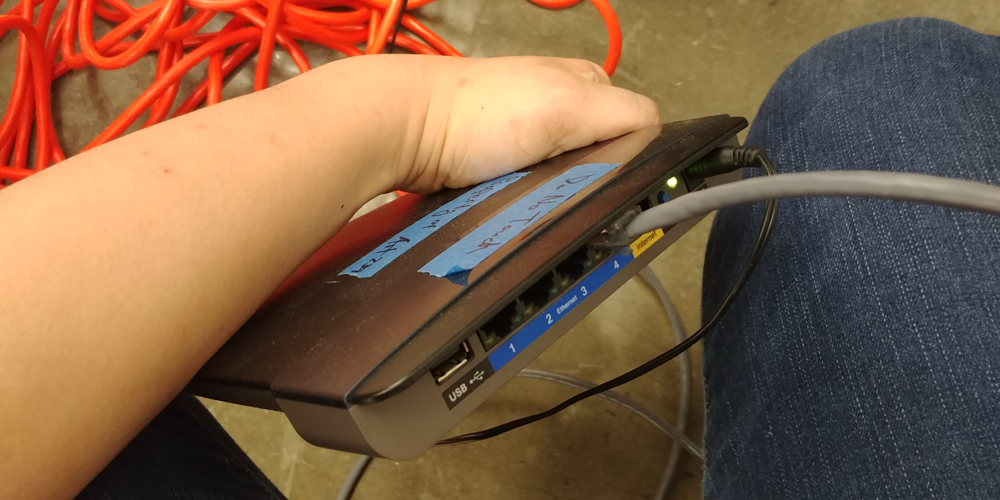

VIE(2019)
Music: Digital Corporate Technology - Glitch Hop Royalty Free Music
VIE is a two-player pixel platformer game created with RPG Maker MV.
The story follows two children named Eon and Wot. Eon desires to escape his fate as the “Chosen” by journeying to the Goddess’s Temple and having her majesty grant him freedom. Young Wot is tasked by the Goddess to assist Eon and help him gain the freedom. However, sentries block the way to the temple and will not let Eon go that easily.
At the start of the game, each player is assigned a different character to take on the role of, either Eon or Wot. The objective of the game is dependant on the character, and each character as their own special action they can perform that the other player can not.
Eon is a magic user and has the ability to activate or deactivate mystical statues, pillars, and tablets. Wot, while not possessing any magic, is able to pass through force fields that were meant to hold back Eon. Gameplay primarily consists of puzzles that utilize the talents of both characters in order to solve. Without another player, progression of the game is impossible.
Fantasy, narrative, and fellowship between players are the main aesthetics of the game. VIE is a game that uses its puzzles to explore the themes of egocentrism, competition, and comradery.
The Artist
 My name is Jennifer Cacal. I was born in Santa Clara, California in 1996 and graduated from San Jose State University in 2019 with a BFA in Digital Media Art. I currently live and work in San Jose, California.
As a digital media artist, I specialize in communication through game design. I have produced a number indie titles, most recently a two-player puzzle game called VIE (2019), which revolved around the themes of companionship and egocentrism. This game was also featured in the DMA:iRl show at the San Jose Hammer Theatre Center. Another one of my works was Orphea (2017) which discussed the idea of one’s purpose and its importance in the face of mortality through the act of progressing and puzzle-solving. Many of my works focus on the everyday and provide a commentary on social philosophies based on my own experiences. I am deeply fascinated with the the idea of unspoken dialogues between artist and players, especially when presented through the process of play. Through the art of gameplay, I want my audience to explore the rules, ideas and concepts of someone else’s reality, and see if the artist and player can still exist peacefully with each other at the end of the day.
As a game designer, my primary aesthetic is 2D and pixelated art. By applying a more minimal and sometimes distorted design, I want to leave more room for the player's imagination and allows the audience to view the world in a different perspective. My main inspiration are games such as Journey (2012) and ICO (2001), which primarily focuses on player experience rather than core mechanics.
Concept
The main idea behind this game lies in the insecurities I have about the future, particularly in the job industry. Obtaining employment in certain fields have become more difficult throughout the decades, and there is this silent game being played where everyone is scrambling to sell themselves as the ‘best’ to the highest bidder. The feeling of competition between artists is more prevalent, especially in the age of the internet where anyone is potentially one click away from developing the skills of a master editor, designer, or artist thanks to the abundant tutorials online. In today’s society, we are judge each other based on the number of likes and follows we receive, and we inevitably begin to believe that like-system determines one’s value and worth. Anything that does not meet our standards, we cut off and ignore.
However, this reality is constantly being challenged in my everyday life. Working alongside my fellow artists and students throughout my college years, I am always confronted with the fact that progress requires multiple exchanges in order to move. Having worked on many group projects in the past, their are skills that I lack and have heavily depended on my partners to accomplish. The same can be said about them with me. Nothing can be done alone and no work can solely be touched by one hand.
The word ‘vie’ means to compete eagerly with someone in order to do or achieve something. While VIE is the name of the game, that is not the game that is being played.
Process
After conceptualization, I downloaded the programs is needed to create the game: RPG Maker MV and Aseprite.
Before any digital work was done, I drew some concept sketches of what I wanted the game to look like, whether I wanted the art to look modern or fantasy. This included character designs and how the puzzles were going to be set up. Story also took priority since it would determine how the game would start and end, as well as player objectives.
I used Aseprite, a pixel art program, for all the art assets including character sprites, title screens, effects, backgrounds, and puzzle assets. All the assets took me about 2 weeks to create. Once all the assets were done, I moved on to coding the game.

|  |  |
|  |
To create the game, I used RPG Maker MV which I have had years of experience with. However, the most challenging aspect was incorporating the two-player system, something RPG Maker was not built to accommodate. I ended up using KageDesu’s AlphaNet beta plugin which is still being developed currently. This plugin allowed the game to be played on two separate devices using ethernet. The main issue I had with this plugin was making sure that each player had their own coded events play separately from each other, which was a key mechanic for the puzzles. I constantly had to playtest the game in order to ensure this.
  
While the game turned out both functional and playable, there were some aspects I was unable to optimize before the show: (1) the IP address needed to be inputted from the menu before starting, (2) synchronicity between the two players’ screens would lag significantly at times, and (3) there was no button to restart without exiting the game. Fortunately, they were quick to fix on the spot and the players were able to continue without any further issues.